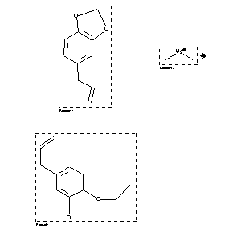

|  |
| FA | RX(1); FLST(1); RX(1) |
Reaction (1 of 1)
| Reaction ID | 132128 |
| Reactant BRN | 136380; 1209226 |
| Reactant | 5-allyl-benzo[1,3]dioxole; methylmagnesium iodide |
| Product BRN | 2257830 |
| Product | 2-ethoxy-5-allyl-phenol |
| No. of Reaction Details | 1 |
Reaction Details (1 of 1)
| Reaction Classification | Preparation |
| Reagent | benzene; diethyl ether |
| Comment | Handbook |
| Citation Pointer | 506318; Journal; Kafuku; APCJA8; Acta Phytochim.; 2; 1924/1925; 117; YKKZAJ; Yakugaku Zasshi; 521; 1925; 1; CHZEA6; Chem.Zentralbl.; GE; 97; I; 1926; 69;506380; Journal; Kafuku; YKKZAJ; Yakugaku Zasshi; 521; 1925; 1; CHZEA6; Chem.Zentralbl.; GE; 97; I; 1926; 69; |
Reference (1 of 2)
| Citation Number | 506318 |
| Document Type | Journal |
| Authors | Kafuku |
| CODEN | APCJA8; YKKZAJ; CHZEA6 |
| Journal Title | Acta Phytochim.; Yakugaku Zasshi; Chem.Zentralbl. |
| Language Code | GE |
| (Series) Volume | 2; 97 |
| Number | 521; I |
| Publication Year | 1924/1925; 1925; 1926 |
| Page | 117; 1; 69 |
Reference (2 of 2)
| Citation Number | 506380 |
| Document Type | Journal |
| Authors | Kafuku |
| CODEN | YKKZAJ; CHZEA6 |
| Journal Title | Yakugaku Zasshi; Chem.Zentralbl. |
| Language Code | GE |
| (Series) Volume | 97 |
| Number | 521; I |
| Publication Year | 1925; 1926 |
| Page | 1; 69 |